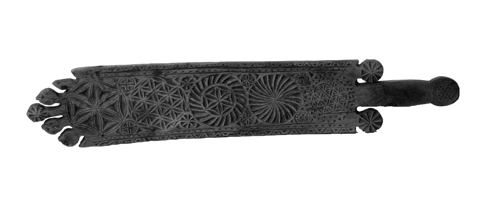
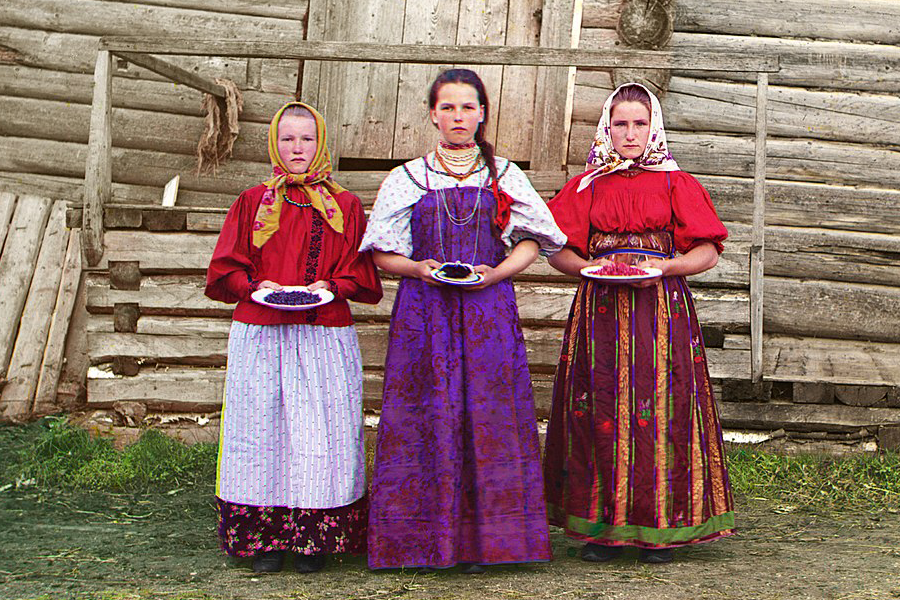

С чего всё началось
В древности этот регион именовался Заволочьем, а в скандинавских сагах его звали Биармия. Древнейшим городом севера является Белозерск (это Вологодская область). Он возник редположительно в середине X века.
Проект, посвящённый истории и культуре Русского Севера.
 А где это?В древности этот регион именовался Заволочьем, а в скандинавских сагах его звали Биармия. Древнейшим городом севера является Белозерск (это Вологодская область). Он возник редположительно в середине X века.
Существует поговорка: «Север начинается с Вологды», старинного русского города на реке того же названия, впадающей в полноводную реку Сухону. В допетровское время по этой реке шли товары из центральных областей России и из-за границы.
После Петра I транспортное и хозяйственное значение этого региона ослабло. Это стало причиной консервации всех сторон жизни населения. Сюда бежали старообрядцы, благодаря чему это место стало заповедником старорусской культуры.
Традиционно к Русскому Северу относят территории Архангельской, Мурманской и Вологодской областей, Карелии, Коми и Ненецкого автономного округа.
Именно Русский Север сберёг для современников величие истории наших предков — былины, сказы, песни, мастерство их рук.
Основа северного деревянного зодчества — сруб из необтёсанных брёвен. Декором служила резьба по дереву на значимых элементах.
Выполнялась на домашней утвари (прялок, ковшей, коробов, братин), сложившийся к концу XIX века в низовьях реки Мезень.
Тонкий лист жести обрабатывался таким образом, что на его поверхности образовывался рисунок, сходный с тем, который «оставляет» мороз на окне.
Делались из глины: лошадки, упряжки, фигурки людей и животных. Их лепили скорее для собственного удовольствия, чем ради заработка.
Чернение появилось в X веке. Заключается в украшении чернёнными рисунками различных серебряных изделий.
Народный художественный промысел, сформировавшийся и практикуемый в сёлах Холмогорского района Архангельской области.